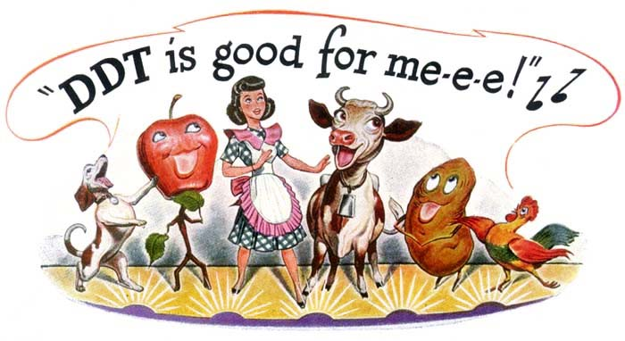
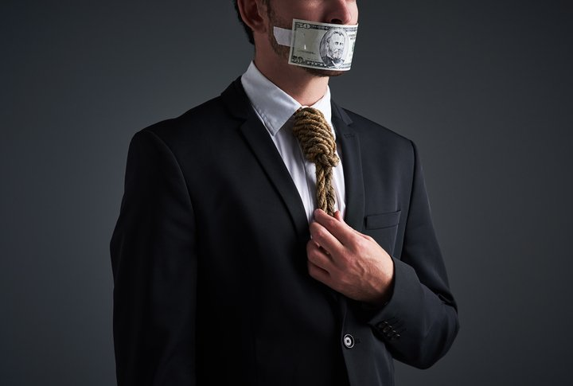

Corporate Fraud

Corporate fraud consists of activities undertaken by an individual or company that are done in a dishonest or illegal manner, and are designed to give an advantage to the perpetrating individual or company. Corporate fraud schemes go beyond the scope of an employee's stated position, and are marked by their complexity and economic impact on the business, other employees and outside parties.
Misrepresentation in Advertisement and Salesmanship
Under the Consumer Protection Act 2007, advertising is seen as misleading if it involves false, misleading or deceptive information that is likely to cause the average consumer to act in a way they might otherwise not. Advertising may also be considered misleading if important information that the average consumer needs to make an informed decision is left out. Misleading advertising covers claims made directly to consumers by manufacturers, distributors and retailers, as well as in advertisements, catalogues, websites etc.
Commercial Bribery
Commercial bribery is a form of bribery which involves corrupt dealing with the agents or employees of potential buyers to secure an advantage over business competitors.[1] It is a form of corruption which does not necessarily involve government personnel or facilities. One common type of commercial bribery is the kickback. For example, a seller of goods or services from "Company A" who offers the purchasing manager of "Company B" a payment to his own account to help him secure a contract for Company B's continued business is engaging in a form of commercial bribery. Other related offenses are payola in the entertainment industry, match fixing in sports, corruption of labor union officials, and bid rigging in non-governmental contracts.
Embezzlement
Embezzlement occurs when someone steals or misappropriates money or property from an employer, business partner, or another person who trusted the embezzler with the asset. Embezzlement is different from fraud or larceny (theft). The embezzler has permission to handle the property in a certain way (but not to take it). Instead, the wrongdoer uses the position of trust granted by the owner to convert the property to the embezzler’s possession and control (to take it).
Manipulation of the Stock Market

Manipulation is the act of artificially inflating or deflating the price of a security or otherwise influencing the behavior of the market for personal gain. Manipulation is illegal in most cases, but it can be difficult for regulators and other authorities to detect. Manipulation is also difficult for the manipulator as the size and number of participants in a market increases. It is much easier to manipulate the share price of smaller companies, such as penny stocks, because they are not as closely watched by analysts and other market participants as the medium and large cap firms. Manipulation is variously called price manipulation, stock manipulation and market manipulation.